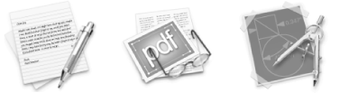
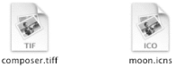
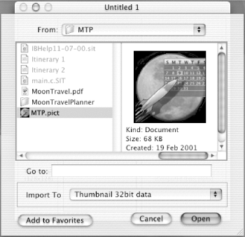
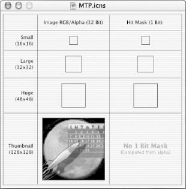
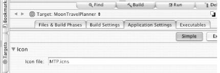
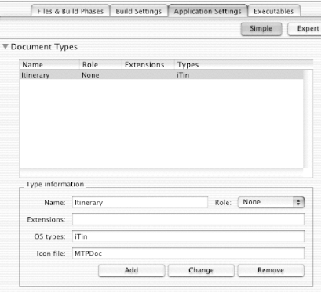

<html>
<head>
<title>Learning Carbon: Chapter 13: Desktop Icons</title>
<LINK REL="stylesheet" HREF="../../../adcstyle.css" TYPE="text/css">

</head>

<BODY BGCOLOR="#FFFFFF" TEXT="#000000" link="#990000" vlink="#0000CC"><a name="//apple_ref/doc/uid/TP40000997"></a>

<!-- start of header -->
<!--#include virtual="/includes/framesetheader" -->
<!-- end of header -->
<br>
<a href="http://developer.apple.com/techpubs/">ADC Home</a> &gt; <a href="../../../index.html"> Documentation</a> &gt; <a href="../../Carbon.html">Carbon</a> &gt;<br><br><br>&nbsp; 
<br>
<!--sample chapter begins -->

<blockquote>

<h2>Learning Carbon</h2>
<i>by Apple Computer, Inc.</i>
<p>

<h2 class="chapter">Chapter 13: Desktop Icons</h2>

<p>
Reprinted with permission by O'Reilly & Associates, Inc., this chapter from <a href="http://www.oreilly.com/catalog/learncarbon/">Learning Carbon</a> explains how to provide custom Mac OS X desktop icons for your Carbon application and any documents it creates. Beginning with a look at the kinds of icon that are used on Mac OS X, this chapter illustrates what goes into icon design, describes the technical details of icons (such as sizes and masks), and shows you how to get your file or application to appear with a custom icon.</p>

<h4 class="tochead">Contents:</h4>


<p>
<a href="#t1">Icon Basics</a>

<br>

<a href="#t2">Moon Travel Planner: Adding Icons</a>

<br>

<a href="#t3">Recap</a>

</p>


<p><a name="INDEX-1282"></a><a name="INDEX-1283"></a><a name="INDEX-1284"></a>
The Finder, the application that manages the
user interface in Mac OS X, represents the file system to the user
through the metaphor of a desktop with folders and documents on
it. Those ubiquitous little pictures called icons are the heart
of the desktop metaphor because they represent documents, storage
media, folders, and applications to the user. By manipulating icons,
the user can conduct such operations as launching applications, opening
folders, and moving files.</p>


<p>Graphic limitations of earlier operating systems constrained
icons to a two-dimensional style. Mac OS X icons, on the other hand,
are capable of having depth and a lush look that approaches photo-realism.</p>


<p>When you create an application, the operating system will
assign it a generic icon unless you provide your own custom icon.
While not entirely unappealing, a generic icon doesn't communicate
anything to the user about an application. To make your application complete,
you should provide a custom icon. If your application creates documents or
uses plug-ins or other files, you should provide icons for those
as well. In this chapter, you'll:</p>


<ul>
<li>
<p>Take a look
at the kinds of icon that are used on Mac OS X</p>

</li>
<p>

<li>
<p>See what goes into icon design</p>

</li>
<p>

<li>
<p>Look at the technical details of icons, such as sizes and
masks</p>

</li>
<p>

<li>
<p>Find out how to get a file or application to appear with your
icon</p>

</li>
<p>

<li>
<p>Add application and document icons to the Moon Travel Planner
application</p>

</li>
<p>
</ul>


<h2 class="sect1"><a name="t1">Icon Basics</a></h2>


<p><a name="INDEX-1285"></a>
Creating icons requires artistic and technical skills. You'll
need artistry to design effective and professional-looking icons.
You'll need technical skill to package the icon with other application
resources, and then to make the necessary changes to get the Finder
to display the icons. This section contains information for both
the artistic and technical aspects of icons.</p>


<a name="CHAP-CH13-2"></a>

<h3 class="sect2">Types
of Icons</h3>


<p>Desktop icons represent a file or folder to the user. Since
there are different kinds of files, there are different kinds of
icons. Each type of icon has distinguishing characteristics that help
the user identify what kind of file the icon represents.</p>


<a name="CHAP-CH13-3"></a>

<h3 class="sect3">Application
icons</h3>


<p><a name="INDEX-1286"></a>
Every application, from the simplest utility to the largest
productivity suite, should have its own custom icon. The application
icon is the single most important way for users to identify and
choose a particular application out of the dozens or hundreds in
their workspaces, so you should make it easy for them by providing
a distinctive application icon. Figure 13-1 shows three examples of
custom application icons.</p>


<p>
<center>
<a name="CHAP-CH13-4"></a>

<h4 class="objtitle">Figure 13.1. Examples of application icons</h4>
</center>
</p>

<p>Note that all the application icons shown in Figure 13-1 share several characteristics.
Each icon contains familiar objects, shown as though they might
be sitting on a desk or tabletop. The composition of the icon makes
use of perspective, color, and shading to provide photo-realistic
representation of the objects. Applications are tools for the user,
so application icons should always show a picture of a tool that
indicates the nature of the task the application is designed to
accomplish. In Figure 13-1, for example, the icon on the left shows a pen, the
icon in the center shows a pair of glasses, and the icon on the
right shows a compass. Using the tools as indicators, it should
not be surprising that the icon on the left represents a text editing
application, the icon in the center represents a PDF document viewer,
and the icon on the right represents a drawing application.</p>


<a name="CHAP-CH13-5"></a>

<h3 class="sect3">Document
icons</h3>


<p><a name="INDEX-1287"></a>
If your application creates document files, you should provide
icons that identify these files. This helps users avoid the frustration
of looking into a folder full of document files with generic icons
and being unable to identify which applications created the files.
If your application creates several types of document files (such
as text and PDF files, for example), you should provide separate
icons for each type of file. Figure 13-2 shows several examples of document icons.</p>


<p>
<center>
<a name="CHAP-CH13-6"></a>

<h4 class="objtitle">Figure 13.2. Examples of document icons</h4>
</center>
</p>


<p>These icons contain several key indicators that tell the user
that these icons represent document files and not applications.
For one, these icons don't show pictures of a tool. Another clue
(one that should be familiar to longtime Mac OS users) is the icon
outline, which forms an image of a piece of paper with a curled-up
corner. In addition, these icons contain representations of the
kind of documents in the file. For example, in Figure 13-2, the pictures show photographs
to indicate that the file contains graphics. Finally, the icons help
the user identify which type of document file is represented by
using a three-letter abbreviation for the file type.</p>


<a name="CHAP-CH13-7"></a>

<h3 class="sect3">Icons
for plug-ins and other support files</h3>


<p><a name="INDEX-1288"></a><a name="INDEX-1289"></a>
If your application uses files other than document files,
you can create icons that identify these files to the user. Many
applications use optional components called plug-ins that add specialized
enhancements to an application's core functionality. An example
of a plug-in is an optional spell-checking component for a word-processing
application. Some applications use support files to store settings
or user preference information. A web browser's bookmark file
is an example of a support file. If your application uses plug-ins or
support files, it is helpful to create separate icons for these
files so that users do not mistake them for document files.</p>


<a name="CHAP-CH13-8"></a>

<h3 class="sect2">Design
Tips</h3>


<p><a name="INDEX-1290"></a>
Unless you are an artist yourself, you'll probably need
to have an artist design great-looking icons for your application.
The following list of tips will help your artist design an icon
whose look is compatible with Aqua:</p>


<ul>
<li>
<p>Use imagery
your users will easily recognize; it should be universal. Avoid
focusing on a secondary aspect of an element. For example, for a
mail icon, a rural mailbox would be less recognizable than a stamped
postcard.</p>

</li>
<p>

<li>
<p>Avoid using anatomy. Anatomical images are hard to do well
and can often detract from the intended meaning.</p>

</li>
<p>

<li>
<p>Keep it focused. Make sure you include an object that captures
the purpose of the application or control.</p>

</li>
<p>

<li>
<p>Use color judiciously to help the icon tell its story; don't
add color just for the sake of making the icon more colorful. A
gradient typically looks better than sharp delineations of color.</p>

</li>
<p>

<li>
<p>Avoid using replicas of Apple hardware products in your icons.
Otherwise your icon could be obsolete or meaningless when a hardware
design changes.</p>

</li>
<p>

<li>
<p>Use a single light source with the light coming from above
the icon.</p>

</li>
<p>
</ul>

<p>You can find more information on icon design in <em class="emphasis">Inside
Mac OS X: Aqua Human Interface Guidelines</em> in Carbon Help
(available in the Project Builder Help menu).</p>


<a name="CHAP-CH13-9"></a>

<h3 class="sect2">Icon
Sizes and Masks</h3>


<p><a name="INDEX-1291"></a>
In Mac OS X, icons are displayed at various sizes, from as
small as 16 &amp;#215; 16 pixels to as large as 128 &amp;#215; 128 pixels. Application
icons, document icons, and other icons that display in the Finder
can be viewed at different sizes: they can be magnified in the Dock,
they can be previewed at full size, and users can specify a preferred
size.</p>


<p><a name="INDEX-1292"></a>
At the very least, you need to provide a <em class="firstterm">thumbnail
icon</em>, which is an icon that's 128 &amp;#215; 128 pixels. Mac
OS uses a sophisticated scaling algorithm to reduce this size when
required--for example, when the user sets the Dock to a smaller
size. Some intricately detailed icons do not display well when scaled
down from thumbnails, so you should provide smaller versions of
each icon--64 &amp;#215; 64, 32 &amp;#215; 32, and 16 &amp;#215; 16--if you wish to avoid
scaling problems.</p>


<p><a name="INDEX-1293"></a>
Icons need to have a <em class="firstterm">mask</em>, an area within
which a user clicks the mouse to select the icon. Icon masks are
sometimes known as hit areas, since they determine which mouse clicks
hit the icon and which don't. The Finder uses the mask to crop
the icon's outline into the desktop's background color or pattern.</p>


<p><a name="INDEX-1294"></a>
You can specify a mask area as simple as the square that contains
the icon, or design one that follows the contour of an elaborate
figure. For example, if you used a rocket-shaped logo in your icon,
you could specify the outline of the rocket as the mask area, rather
than using the entire 128 &amp;#215; 128 pixel square that encloses the
rocket. In general, you should avoid unusually shaped mask areas
that can be frustrating to novice users, who may not understand
why a mouse click inside the perimeter of the icon does not register
as a hit.</p>


<a name="CHAP-CH13-10"></a>

<h3 class="sect2">Assigning
Icons to Applications and Files</h3>


<p><a name="INDEX-1295"></a><a name="INDEX-1296"></a><a name="INDEX-1297"></a>
Once you've designed and created icons for your application,
you'll need to take a few more steps to get the icons to display
in the Finder. The image files that contain your application and
document icons should be in <tt class="literal">'TIFF'</tt> or <tt class="literal">'PICT'</tt> format.
Then, you'll need to do the following:</p>


<ul>
<li>
<p>Import your
icons, and any masks you create for them, into an Icon Composer
file. You must create one file for each set of icons--the application
icons, document icons, and so forth.</p>

</li>
<p>

<li>
<p>Register the Icon Composer file for the application icon.
You do this in Project Builder.</p>

</li>
<p>

<li>
<p>Add a document type to your project. You do this in Project
Builder. You need to set up a document type and indicate which Icon
Composer file contains the document's icon images.</p>

</li>
<p>
</ul>


<a name="CHAP-CH13-11"></a>

<h3 class="sect3">Importing
icons into Icon Composer</h3>


<p><a name="INDEX-1298"></a>
You must import your icons, and any masks you create for them,
into Icon Composer. Icon Composer is provided with the Mac OS X
Developer CD; you'll find it in the <tt class="literal">/Developer/Applications/</tt> directory.
You need to create an Icon Composer file for each set of icons (application
and document).</p>


<p>You import all sizes of an icon into the Icon Composer file.
Icon Composer saves the file with a <tt class="literal">.icns</tt> extension,
which designates the type of file Mac OS X uses specifically for icons.
When you import images that are smaller than the thumbnail, Icon
Composer asks if you'd like it to extract a mask for you. Unless
you have created a mask, you should let Icon Composer extract one
for you.</p>


<p>If you import multiple sizes of an icon to an Icon Composer
file, Mac OS X automatically displays the appropriate sizes for
a given situation. If you import just the thumbnail size, Mac OS
X scales the icon as best it can when a smaller size is needed.</p>


<p>Once you have a <tt class="literal">.icns</tt> files
you must still associate the icons in it with specific applications or
files. You'll see how that's done in the next two sections.</p>


<a name="CHAP-CH13-12"></a>

<h3 class="sect3">Register
the Icon Composer file for the application icon</h3>


<p><a name="INDEX-1299"></a>
The Application Settings pane in Project Builder provides
a field in which you can type the name of the Icon Composer file
(but without the <tt class="literal">.icns</tt> extension).
In addition to specifying this file, you should also make sure you've
entered a creator code in the Signature setting field in the Application
Settings pane. You learned about creator codes in Chapter 5, "Interface Builder: Toolsand Controls". As you may recall,
creator codes (often referred to as creators) identify your application
to the Finder as well as identify documents created by your application.
Each creator code must be unique, so that the Finder can display
the correct icons and associate the correct document files for each application.</p>


<blockquote class="note">

<class="objtitle"><b>NOTE:</b>
When assigned to an application, a creator
code is also called an application signature, because it identifies
the application. When assigned to a document, it identifies who
created the file, hence the name creator code.</p>

</blockquote>


<p>When you create your own application, you should register
a unique creator code with Apple Developer Technical Support, which
maintains a database of creator codes to ensure that there are no
duplications. Before you choose a creator code, you should know
that codes consisting entirely of lowercase characters (<tt class="literal">moon</tt>,
for example) are reserved by Apple. See Appendix A, "Additional Resources" 
for information on where to register your creator code.</p>


<a name="CHAP-CH13-13"></a>

<h3 class="sect3">Adding
a Document Type to a Project</h3>


<p><a name="INDEX-1300"></a><a name="INDEX-1301"></a>
You need to inform the Finder of the types of document your
project creates by adding each document type in the Document Types
section of Project Builder's Application Settings pane. At the
minimum, you must provide a creator code, file type, and Icon Composer
filename for each document type. You need to supply the creator
code you use for the application.</p>


<p>While a creator code identifies the application that created
a file, a file type (also sometimes called an OS type) is a four-character
code that identifies a document's format. When your application
creates a new document, it must specify file type information for the
document file. There are two categories of file types, generic and
custom.</p>


<a name="CHAP-CH13-14"></a>

<h3 class="sect4">Generic file types</h3>


<p><a name="INDEX-1302"></a><a name="INDEX-1303"></a>
There are numerous generic file types, which are well-known
file formats that can be parsed by a large number of applications.
The most familiar generic file type is <tt class="literal">'TEXT'</tt>, which
indicates that a file is a simple stream of ASCII characters. Other
generic file types include those for graphics formats like <tt class="literal">'PICT'</tt> and <tt class="literal">'TIFF'</tt>.
One advantage of using a generic file type for your documents is
that you can usually find well-tested sample code to use in your
project, instead of creating file-reading and file-writing functions
from scratch.</p>


<a name="CHAP-CH13-15"></a>

<h3 class="sect4">Custom file types</h3>


<p><a name="INDEX-1304"></a>
If your application needs to store information in a document
in a way that isn't practical with generic file types, you can
design a custom file type. For example, graphics applications often
use custom file formats that use compression to reduce the space required
to store large amounts of data. In addition to designing the file
format, you need to specify a custom file type. Every file type
that your application uses for its document files should have a
distinctive icon, so that users can quickly distinguish it from
other types. As with creator codes, file types consisting entirely
of lowercase letters are reserved by Apple.</p>


<blockquote class="note">

<class="objtitle"><b>NOTE:</b>
Icons can do more than simply represent
files in the user interface. By using the Icon Services programming
interface, you can change the appearance of your application's
icons to reflect changes in a file's condition or the progress
of a process. To find out more, see the Icon Services and Utilities
documentation in Carbon Help (available in the Project Builder Help
menu).</p>

</blockquote>


<p>Now that you've gotten an overview of how application and
document icons are added to an application, you can get some practice
by adding icons to the Moon Travel Planner application.</p>


<h2 class="sect1"><a name="t2">Moon Travel Planner: Adding Icons</a></h2>


<p>You may have noticed that, after you build and run the Moon
Travel Planner application, the Finder uses generic icons to represent
the application and its document files. In this section, you'll
add icons that inspire an interest in the moon and lunar travel.
You won't need to design any icons; just download the materials
provided for this book. See the Preface for details.</p>


<p>You'll do the following:</p>


<ol>
<li>
<p><a name="INDEX-1305"></a>
Import images into Icon Composer.</p>

</li>
<p>

<li>
<p>Add icon files to the Moon Travel Planner project.</p>

</li>
<p>

<li>
<p>Register the application file.</p>

</li>
<p>

<li>
<p>Add a document type to the Moon Travel Planner project.</p>

</li>
<p>

<li>
<p>Make sure the icons display in the Finder.</p>

</li>
<p>
</ol>
<blockquote class="note">

<class="objtitle"><b>NOTE:</b>
An important prerequisite to adding icons
to your application is adding the application's creator code to
the property list. You already entered the Moon Travel Planner creator
code, <tt class="literal">'MTPP'</tt>, in Chapter 10, "Property Lists".</p>

</blockquote>


<a name="CHAP-CH13-17"></a>

<h3 class="sect2">Import
Images to Icon Composer</h3>


<p><a name="INDEX-1306"></a>
Icon Composer creates a file with a <tt class="literal">.icns</tt> extension
in the format used by Mac OS X to store icons. You'll only import
a thumbnail image for the Moon Travel Planner application. You'd
use the same procedure to import images of other sizes, if you had
them.</p>


<p>Follow these steps to create Icon Composer files for the application
and document icons provided with the Moon Travel Planner application.
These icons are in the <tt class="literal">MTP.tif</tt> and <tt class="literal">MTPDoc.tif</tt> files,
respectively. See the Preface for details on
how to obtain the materials.</p>


<p>You should follow these procedures twice: once to create an
Icon Composer file for the application icon, and the second time
to create an Icon Composer file for the document icon:</p>


<ol>
<li>
<p>Double-click
Icon Composer in the <tt class="literal">/Developer/Applications</tt> directory. Icon
Composer automatically opens an untitled file for your icons.</p>

</li>
<p>

<li>
<p>Choose Import Image from the File menu.</p>

</li>
<p>

<li>
<p>Select the file that contains the application icon, as shown
in Figure 13-3. You
can select the <tt class="literal">MTP.tif</tt> or <tt class="literal">MTPDoc.tif</tt> file
provided with the Moon Travel Planner materials. If you created
your own icon, you can use it instead of the one provided.</p>

<p>
<center>
<a name="CHAP-CH13-18"></a>

<h4 class="objtitle">Figure 13.3. Importing an image into Icon Composer</h4>
</center>
</p>

</li>
<p>

<li>
<p>Choose a data size from the Import To pop-up menu. The <tt class="literal">MTP.tif</tt> and <tt class="literal">MTPDoc.tif</tt> files
each contain a thumbnail icon, so you should select "Thumbnail
32 bit data" then click Open. If you have an icon
of a different size, choose the appropriate size from the pop-up menu. The <tt class="literal">MTP.icns</tt> file
appears in the Icon Composer window, as shown in Figure 13-4.</p>

<p>
<center>
<a name="CHAP-CH13-19"></a>

<h4 class="objtitle">Figure 13.4. A
thumbnail icon in an Icon Composer file</h4>
</center>
</p>
</li>
<p>

<li>
<p>Add any icons you've created in other sizes. Mac OS
X requires that you add a thumbnail icon; all other sizes are optional. If
you have additional smaller images to import, either repeat steps
2-4 for each image or just drag the desired image from the Finder
into the appropriate box in Icon Composer. When you
add any icon other than the thumbnail, you'll see a dialog asking
if you want Icon Composer to extract a mask for the image. Unless
you have special masking needs, you should let Icon Composer extract
the mask. Otherwise, you'll need to add a mask for each image
(other than the thumbnail) you add.</p>

</li>
<p>

<li>
<p>Choose Save from the File menu. Type <tt class="literal">MTP</tt> or <tt class="literal">MTPDoc</tt> as
the filename and save the file in the Moon Travel Planner project folder. Icon
Composer automatically appends <tt class="literal">.icns</tt> to
the filename.</p>

</li>
<p>
</ol>


<a name="CHAP-CH13-20"></a>

<h3 class="sect2">Add
the Icon Files</h3>


<p><a name="INDEX-1307"></a>
Now that you've created the <tt class="literal">MTP.icns</tt> or <tt class="literal">MTPDoc.icns</tt> file,
you need to add it to the Moon Travel Planner project, then make
the appropriate settings so the new icon replaces the generic one.
For each file, follow these steps:</p>


<ol>
<li>
<p>Open the
Moon Travel Planner project. If the Moon Travel Planner is
already open, click its icon in the Dock to make it active.</p>

</li>
<p>

<li>
<p>Add the file to the Moon Travel Planner project. Choose
Add Files from the Project menu. In the sheet that appears, select
the <tt class="literal">MTP.icns</tt> or <tt class="literal">MTPDoc.icns</tt> file
and click Open. Then click Add. If you need to, drag
the <tt class="literal">MTP.icns</tt> or <tt class="literal">MTPDoc.icns</tt> file
reference to the Resources group.</p>

</li>
<p>
</ol>


<a name="CHAP-CH13-21"></a>

<h3 class="sect2">Register
the Application Icon File</h3>


<p>Now that you've added the <tt class="literal">MTP.icns</tt> file,
you need to make the appropriate settings so the new icon replaces
the generic one:</p>


<ol>
<li>
<p>Open the
Application Settings pane. Click the Targets tab, select Moon
Travel Planner from the Targets list, and then click the Application
Settings tab.</p>

</li>
<p>

<li>
<p>Enter <tt class="userinput"><b>MTP</b></tt> as the
name of the file. Type <tt class="userinput"><b>MTP</b></tt> in
the Icon File text field, as shown in Figure 13-5.</p>


<blockquote class="note">

<class="objtitle"><b>NOTE:</b>
Make sure you do not add the <tt class="literal">.icns</tt> extension; Project Builder does that for you automatically.</p>

</blockquote>
</li>
<p>
</ol>
<p>
<center>
<a name="CHAP-CH13-22"></a>

<h4 class="objtitle">Figure 13.5. Entering the icon file name in the
Application Settings pane</h4>
</center>
</p>


<a name="CHAP-CH13-23"></a>

<h3 class="sect2">Add
a Document Type</h3>


<p>Now that you've created an Icon Composer file for a Moon
Travel Planner document, and you've added it to your project,
you need to set file type information. Follow these steps:</p>


<ol>
<li>
<p>In the Application
Settings tab, scroll until you can see the Type Information group
box (as shown in Figure 13-6). You must add information for each document type
your application will open or save. The Moon Travel Planner application
will open a custom document type--<tt class="literal">iTin</tt> (an itinerary
file).</p>


 
<blockquote class="note">

<class="objtitle"><b>NOTE:</b>
We've made up the itinerary
file type just to show you how to add a custom file type. If you
create your own application that uses a custom file type, you must
also define the custom file format and write functions that allow
your application to store and retrieve data of that format. The
Moon Travel Planner itinerary file type is just a text file.</p>

</blockquote>
<p>
<center>
<a name="CHAP-CH13-24"></a>

<h4 class="objtitle">Figure 13.6. Adding document type information
in Project Builder</h4>
</center>
</p>
</li>
<p>

<li>
<p>Enter a name for the file type. In the Name field type <tt class="userinput"><b>Itinerary</b></tt>.</p>


<blockquote class="note">

<class="objtitle"><b>NOTE:</b>
<a name="INDEX-1308"></a>
When you provide type information, you are actually assigning values
to the <tt class="literal">CFBundleDocumentTypes</tt> property
keys defined in Chapter 10, "Property Lists".
The Name field is the <tt class="literal">CFBundleTypeName</tt> property.</p>

</blockquote>
</li>
<p>

<li>
<p>Enter extensions information. This is the <tt class="literal">CFBundleTypeExtensions</tt> property.
Extensions can help the user distinguish between various types of
document files. Entering extension information is optional. Leave
the Extensions field blank; the Moon Travel Planner application
does not add an extension to document filenames. If
you provide an extension, your file-saving functions should add
the appropriate extension to the filename that the user enters in
the Save dialog.</p>

</li>
<p>

<li>
<p>Enter an OS type. We're using the four-character code <tt class="literal">iTin</tt> to
denote the itinerary file type. Type <tt class="userinput"><b>iTin</b></tt> in
the "OS types" text field. This is the <tt class="literal">CFBundleTypeOSTypes</tt> property.</p>

</li>
<p>

<li>
<p>Enter a filename for document icon file. Type <tt class="userinput"><b>MTPDoc</b></tt> in
the "Icon file" text field. Make sure you do not
add the <tt class="literal">.icns</tt> extension;
that's done automatically. This is the <tt class="literal">CFBundleTypeIconFile</tt> property.</p>

</li>
<p>

<li>
<p>Click Add. The document type should appear in the Document
Types list, as shown in Figure 13-6.</p>

</li>
<p>
</ol>

<p>To add another file type, click in the blank area of the Document
Types list to clear the Type Information fields. Then, repeat steps
2 through 6. The procedure for adding a generic type, such as <tt class="literal">'TEXT'</tt>,
is the same as the one for adding a custom type.</p>


<a name="CHAP-CH13-25"></a>

<h3 class="sect2">Make
Sure the Icons Display in the Finder</h3>


<p>Let's make sure that the application and its documents use
the icons you've added. You'll need to build and run the application,
then check the icons in the Finder:</p>


<ol>
<li>
<p>Click the
Build button in the upper-left corner of the Moon Travel Planner
project window.</p>

</li>
<p>

<li>
<p>Click the Run button in the upper-left corner of the project
window. Look at the Dock as the Moon Travel Planner application
launches. You should see the new icon as the application starts
up.</p>

</li>
<p>

<li>
<p>Open an itinerary file. In the Moon Travel Planner application,
choose Open Itinerary from the File menu, then select a file to
open.</p>

</li>
<p>

<li>
<p>Save the itinerary file under a new name. Choose Save
Itinerary As from the File menu and type a new filename.</p>

</li>
<p>

<li>
<p>In the Finder, navigate to the directory where you saved the
itinerary file.</p>

</li>
<p>

<li>
<p>If you need to, click the icon view button. The saved
itinerary file should appear with the custom document icon.</p>

</li>
<p>
</ol>


<h2 class="sect1"><a name="t3">Recap</a></h2>


<p>The Finder represents files and folders to the user through
icons. You can add custom icons to your project to make it easier
to identify your application and its associated document files.
First you create the icons with a graphics program and store them
in an icon file by using the Icon Composer application. Then you
add the icon files to your project and add entries to the application's
property list so that the icons will be recognized by the Finder.</p>


<p>By now you should have a complete, functioning Moon Travel
Planner application with is own cool icon. We'll finish up in
the next chapter by introducing a few advanced topics to whet your
appetite to create you own application. 
<a name="INDEX-1309"></a>
</p>


</blockquote>

<!-- start of footer -->
<!--#include virtual="/includes/framesetfooter" -->
<!-- end of footer -->
</body>
</html>
